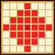

| Ability | ||||||
|---|---|---|---|---|---|---|
| Type | Name | MP | Element | Range | Description | |
| Forbidden Trelixir* 禁断の秘薬 |
94 |  Rhombus (L) (incl. self) |
Heals a major amount of HP and restores a moderate amount of MP for all allies in area of effect, grants a barrier that that takes up to 500 damage for all allies in area of effect for 99 turns Turns needed: 2 turns (Times usable: 2) |
|||
| Details | |||
|---|---|---|---|
| No. of Attacks | Base Potency | Damage Calc. MP Calculation is based on testing, and may not be entirely accurate |
Secondary Effect Chance |
| 1 | 360 (HP Heal) 85 (MP Heal) |
[1 + (User's Level/91)] x Base Potency [1 + (User's Level/332)] x Base Potency |
100% Grants ally 500 HP barrier (99 turns) |